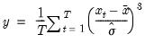
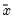
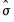
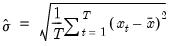

@skew Skewness. Computes the skewness of the elements of x. Syntax: @skew(x[, s]) x: series, vector, matrix s: (optional) sample string or object when x is a series and assigning to a series Return: number The skewness is calculated as  where  is the sample mean, and  is an estimator for the standard deviation that is based on the biased estimator for the variance  The skewness of a symmetric distribution, such as the normal distribution, is zero. Positive skewness means that the distribution has a long right tail and negative skewness implies that the distribution has a long left tail. For series calculations, EViews will use the current or specified workfile sample. Examples If x = @nrnd, then = @skew(x) returns a value close to 0 in large samples (since the normal distribution is symmetric). Cross-references See also @mean, @var, and @kurt.